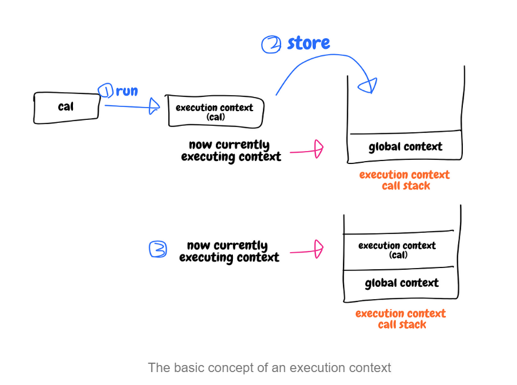

Whenever you write some code, your code is in a space — that space is called the “execution context”. Imagine you wrote a simple calculator:
In JavaScript, whenever a function is invoked, a new execution context is created on the execution context currently running. A newly created one is stored in the stack for execution contexts. So, if we call cal(), the new context will be created and it will be pushed to the context stack. But, by default, there’s an already existing context in the stack — a global execution context.
First the function cal is called and run so the new execution context is created. Then it is stored in the context stack. Then the control of the current execution context is transferred to the newly created one from, in this case, the global context.
An execution context is created whenever you call a function.